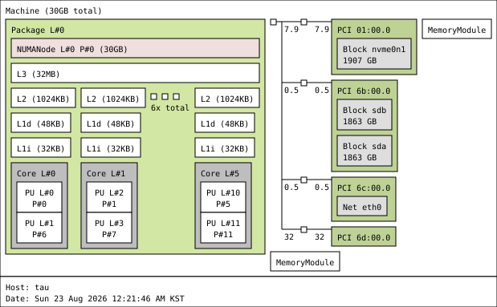

tau¶
System:
Kernel: 6.18.39 arch: x86_64 bits: 64 compiler: gcc v: 15.3.0 clocksource: tsc
avail: hpet,acpi_pm
parameters: initrd=\EFI\nixos\kcqyn3cv988xzxnpdmyfzy42izbw99g4-initrd-linux-6.18.39-initrd.efi
init=/nix/store/c7753jsciiidds0bpi14nykykz1b8lvv-nixos-system-tau-26.11.20260726.5471b86/init
console=ttyS0,115200 console=tty0 root=fstab loglevel=4 lsm=landlock,yama,bpf audit=1
audit_backlog_limit=1024
Console: N/A Distro: NixOS 26.11 (Zokor)
Machine:
Type: Desktop Mobo: ASRock model: X600M-STX serial: <filter>
uuid: <filter> Firmware: UEFI vendor: American Megatrends LLC.
v: 4.08 date: 12/05/2024
Memory:
System RAM: total: 32 GiB available: 30.44 GiB used: 5.02 GiB (16.5%)
Array-1: capacity: 128 GiB slots: 2 modules: 2 EC: None max-module-size: 64 GiB note: est.
Device-1: Channel-A DIMM 0 type: DDR5 detail: synchronous unbuffered (unregistered)
size: 16 GiB speed: spec: 5600 MT/s actual: 4800 MT/s volts: curr: 1.1 min: 1.1 max: 1.1
width (bits): data: 64 total: 64 manufacturer: Samsung part-no: M425R2GA3BB0-CWMOL
serial: <filter>
Device-2: Channel-B DIMM 0 type: DDR5 detail: synchronous unbuffered (unregistered)
size: 16 GiB speed: spec: 5600 MT/s actual: 4800 MT/s volts: curr: 1.1 min: 1.1 max: 1.1
width (bits): data: 64 total: 64 manufacturer: Samsung part-no: M425R2GA3BB0-CWMOL
serial: <filter>
PCI Slots:
Message: No PCI Slot data found.
CPU:
Info: model: AMD Ryzen 5 9600X socket: AM5 bits: 64 type: MT MCP arch: Zen 5 gen: 5 level: v4
note: check built: 2024+ process: TSMC n4 (4nm) family: 0x1A (26) model-id: 0x44 (68) stepping: 0
microcode: 0xB404023
Topology: cpus: 1x dies: 1 clusters: 1 cores: 6 threads: 12 tpc: 2 smt: enabled cache:
L1: 480 KiB desc: d-6x48 KiB; i-6x32 KiB L2: 6 MiB desc: 6x1024 KiB L3: 32 MiB desc: 1x32 MiB
Speed (MHz): avg: 3008 min/max: 628/5486 boost: enabled base/boost: 3900/5450 scaling:
driver: amd-pstate-epp governor: powersave volts: 1.3 V ext-clock: 100 MHz cores: 1: 3008 2: 3008
3: 3008 4: 3008 5: 3008 6: 3008 7: 3008 8: 3008 9: 3008 10: 3008 11: 3008 12: 3008
bogomips: 93430
Flags-basic: avx avx2 ht lm nx pae sse sse2 sse3 sse4_1 sse4_2 sse4a ssse3 svm
Vulnerabilities:
Type: gather_data_sampling status: Not affected
Type: ghostwrite status: Not affected
Type: indirect_target_selection status: Not affected
Type: itlb_multihit status: Not affected
Type: l1tf status: Not affected
Type: mds status: Not affected
Type: meltdown status: Not affected
Type: mmio_stale_data status: Not affected
Type: old_microcode status: Not affected
Type: reg_file_data_sampling status: Not affected
Type: retbleed status: Not affected
Type: spec_rstack_overflow mitigation: IBPB on VMEXIT only
Type: spec_store_bypass mitigation: Speculative Store Bypass disabled via prctl
Type: spectre_v1 mitigation: usercopy/swapgs barriers and __user pointer sanitization
Type: spectre_v2 mitigation: Enhanced / Automatic IBRS; IBPB: conditional; STIBP: always-on;
PBRSB-eIBRS: Not affected; BHI: Not affected
Type: srbds status: Not affected
Type: tsa status: Not affected
Type: tsx_async_abort status: Not affected
Type: vmscape mitigation: IBPB on VMEXIT
Graphics:
Device-1: Advanced Micro Devices [AMD/ATI] Granite Ridge [Radeon Graphics] vendor: ASRock
driver: amdgpu v: kernel arch: RDNA-2 code: Navi-2x process: TSMC n7 (7nm) built: 2020-22 pcie:
gen: 4 speed: 16 GT/s lanes: 16 ports: active: none empty: DP-1, DP-2, HDMI-A-1, Writeback-1
bus-ID: 6d:00.0 chip-ID: 1002:13c0 class-ID: 0300 temp: 41.0 C
Display: server: No display server data found. Headless machine? tty: 80x40
API: EGL Message: No EGL data available.
API: OpenGL Message: GL data unavailable in console for root.
Info: Tools: api: eglinfo,glxinfo x11: xdpyinfo, xprop, xrandr
Audio:
Device-1: Advanced Micro Devices [AMD/ATI] Radeon High Definition Audio driver: snd_hda_intel
v: kernel pcie: gen: 4 speed: 16 GT/s lanes: 16 bus-ID: 6d:00.1 chip-ID: 1002:1640 class-ID: 0403
Device-2: Advanced Micro Devices [AMD] Ryzen HD Audio vendor: ASRock driver: snd_hda_intel
v: kernel pcie: gen: 4 speed: 16 GT/s lanes: 16 bus-ID: 6d:00.6 chip-ID: 1022:15e3 class-ID: 0403
API: ALSA v: k6.18.39 status: kernel-api tools: N/A
Network:
Device-1: Realtek RTL8125 2.5GbE vendor: ASRock driver: r8169 v: kernel pcie: gen: 2
speed: 5 GT/s lanes: 1 port: e000 bus-ID: 6c:00.0 chip-ID: 10ec:8125 class-ID: 0200
IF: eth0 state: up speed: 1000 Mbps duplex: full mac: <filter>
IP v4: <filter> scope: global broadcast: <filter>
IP v6: <filter> virtual: proto kernel_ll scope: link
IF-ID-1: tailscale0 state: unknown speed: -1 duplex: full mac: N/A
IP v4: <filter> scope: global
IP v6: <filter> scope: global
IP v6: <filter> virtual: stable-privacy proto kernel_ll scope: link
IF-ID-2: tinc.naru state: down mac: N/A
IF-ID-3: wg-admin state: unknown speed: N/A duplex: N/A mac: N/A
IP v4: <filter> scope: global
Info: services: nginx, sshd, systemd-networkd, systemd-timesyncd
WAN IP: <filter>
RAID:
Supported mdraid levels: raid0
Device-1: md127 maj-min: 9:127 type: mdraid level: raid-0 status: active state: clean
size: 3.64 TiB
Info: report: N/A blocks: 3906762752 chunk-size: 512k super-blocks: 1.2
Components: Online:
0: sda1 maj-min: 8:1 size: 1.82 TiB state: active sync
1: sdb1 maj-min: 8:17 size: 1.82 TiB state: active sync
Drives:
Local Storage: total: raw: 5.5 TiB usable: 5.5 TiB used: 180.95 GiB (3.2%)
ID-1: /dev/nvme0n1 maj-min: 259:0 vendor: Imation model: M.2 PCIe 2TB SSD Z981 size: 1.86 TiB
block-size: physical: 512 B logical: 512 B speed: 63.2 Gb/s lanes: 4 tech: SSD serial: <filter>
fw-rev: ERFM11.2 temp: 33.9 C scheme: GPT
SMART: yes health: PASSED on: 325d 23h cycles: 26 read-units: 5,851,450 [2.99 TB]
written-units: 21,538,645 [11.0 TB]
ID-2: /dev/sda maj-min: 8:0 vendor: Western Digital model: WD20SPZX-00UA7T0
family: Blue Mobile (SMR) size: 1.82 TiB block-size: physical: 4096 B logical: 512 B sata: 3.1
speed: 6.0 Gb/s tech: HDD rpm: 5400 serial: <filter> fw-rev: 1A01 temp: 36 C scheme: GPT
SMART: yes state: enabled health: PASSED on: 326d 18h cycles: 25
ID-3: /dev/sdb maj-min: 8:16 vendor: Western Digital model: WD20SPZX-00UA7T0
family: Blue Mobile (SMR) size: 1.82 TiB block-size: physical: 4096 B logical: 512 B sata: 3.1
speed: 6.0 Gb/s tech: HDD rpm: 5400 serial: <filter> fw-rev: 1A01 temp: 36 C scheme: GPT
SMART: yes state: enabled health: PASSED on: 326d 12h cycles: 25
Partition:
ID-1: / raw-size: 1.86 TiB size: 1.86 TiB (99.95%) used: 64.13 GiB (3.4%) fs: xfs
block-size: 512 B dev: /dev/nvme0n1p3 maj-min: 259:3
ID-2: /boot raw-size: 1024 MiB size: 1022 MiB (99.80%) used: 114.1 MiB (11.2%) fs: vfat
block-size: 512 B dev: /dev/nvme0n1p2 maj-min: 259:2
Swap:
Kernel: swappiness: 10 (default 60) cache-pressure: 50 (default 100) zswap: no
ID-1: swap-1 type: zram size: 15.22 GiB used: 0 KiB (0.0%) priority: 100 comp: zstd
avail: lzo-rle,lzo,lz4,lz4hc,deflate,842 dev: /dev/zram0
Sensors:
System Temperatures: cpu: 50.4 C mobo: 36.0 C gpu: amdgpu temp: 40.0 C
Fan Speeds (rpm): N/A
Info:
Processes: 295 Power: uptime: 13d 2h 27m states: freeze,mem,disk suspend: deep avail: s2idle
wakeups: 0 hibernate: platform avail: shutdown, reboot, suspend, test_resume image: 12.11 GiB
Init: systemd v: 261 default: multi-user tool: systemctl
Packages: pm: nix-default pkgs: 0 pm: nix-sys pkgs: 555 libs: 84 pm: nix-usr pkgs: 0 Compilers:
gcc: 15.3.0 Client: Sudo v: 1.9.17p2 inxi: 3.3.41
